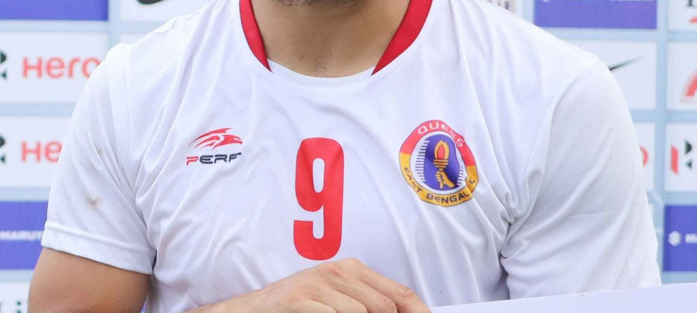

Posted at Date: February 07, 2019
Credit : রাইট স্পোর্টস ওয়েব ডেস্ক
এসকেদার আবার জোড়া গোল নেরোকার বিরুদ্ধে! খেতাবি লড়াইয়ে ইস্টবেঙ্গল

ইস্টবেঙ্গল – ২ নেরোকা – ১
(এসকেদা ৬৭, ৮৬) (চেনচো ৩)
আই লিগের খেতাবি দৌড়ে ফিরে এল ইস্টবেঙ্গল, বললে ঠিক হবে না। সত্যিই কি খেতাবি দৌড়ের বাইরে ছিল ইস্টবেঙ্গল? একেবারেই নয়। সর্বভারতীয় ফুটবল সংস্থা যেভাবে আই লিগের সূচি তৈরি করেছে তাতে ইস্টবেঙ্গলের খেলাই সবচেয়ে কম থাকছে, বহু সপ্তাহ ধরেই। হঠাৎ এবার এগার দিনে চার ম্যাচ খেলে – যার মধ্যে দুটি আবার খেতাবি দৌড়ে এগিয়ে-থাকা দলগুলির বিরুদ্ধে – সমান-সমান করে ফেলতে হবে, ১৭ ম্যাচে! ইস্টবেঙ্গল বৃহস্পতিবার ঘরের মাঠে খেলল ১৪তম ম্যাচ। নেরোকার বিরুদ্ধে পিছিয়ে পড়েও জিতল। ১৪ ম্যাচে ২৮ পয়েন্ট নিয়ে থাকল চতুর্থ স্থানে। ‘ভুটানের রোনালদো’ চেনচো জিয়েলতসেন এই মরসুমের শুরুতে বেঙ্গালুরু এফসি-তে গিয়েছিলেন, আইএসএল-এ খেলতে। সুযোগ পাননি বিশেষ। তাই মরসুমের মাঝপথে ফিরে এসেছেন আই লিগ খেলতে, নেরোকা এফসি-তে। কাতসুমি ইউসার কর্নার থেকে গোল চেনচোর, রক্ষিত দাগারের হাত এবং লালরিনদিকা রালতের পা হয়ে বল গিয়েছিল যাঁর কাছে। নেরোকার হয়ে অভিষেকের তিন মিনিটেই।
৩৪ হাজার ৮৯২ দর্শকের সামনে যুবভারতীতে ইস্টবেঙ্গল ম্যাচে ফিরে আসার চেষ্টা করেছিল সঙ্গে সঙ্গেই। কিন্তু, প্রথমার্ধে সমতা ফেরানো যায়নি তোনি দোবালে এবং ফরোয়ার্ডদের ব্যর্থতায়। দ্বিতীয়ার্ধে ৫৮ মিনিটে তোনির পরিবর্তে মাঠে এসেছিলেন এনরিকে এসকেদা, পরের মিনিটে লালদানমাউইয়া রালতের জায়গায় ব্র্যান্ডন। এমনকি, ৬৪ মিনিটে কমলপ্রীত সিংয়ের জায়গায় সুরাবুদ্দিন মল্লিককে এনেছিলেন আলেখান্দ্রো, পাল্টে দিয়েছিলেন খেলার ছক। ৬৭ মিনিটে গোলশোধ! আই লিগ শুরুর সময় এসকেদাকে ধরেই এগোতে চেয়েছিলেন স্পেনীয় কোচ। কিন্তু, চোট পেয়ে দেশে ফিরে গিয়েছিলেন এসকেদা। ফিরেছেন চোট সারিয়ে। এখনও ম্যাচ শুরু করার জায়গায় আসেননি, মনে করছেন কোচ। নেরোকার বিরুদ্ধে অবশ্য কোচের আস্থার মর্যাদা দিলেন এসকেদা, জোড়া গোলে। দুবারই হেডে। প্রথমে খাইমে সানতোসের ভাসানো ক্রসে, পরে, ৮৬ মিনিটে সামাদের ক্রসে মাথা ছুঁইয়ে। ৩৩ মিনিট মাঠে থেকেই ম্যাচের সেরা! নেরোকা অবশ্য তাঁর প্রিয়, মরসুমের শুরু থেকেই। প্রথম ম্যাচেই জোড়া গোল করে ম্যাচের সেরা হয়েছিলেন গত ২৭ অক্টোবর।
আই লিগ তালিকায় এখন শীর্ষে আছে রিয়েল কাশ্মীর, ১৬ ম্যাচ খেলে ৩২ পয়েন্ট পেয়ে। দ্বিতীয় চেন্নাই সিটি এফসি ১৪ ম্যাচ খেলেছে, ৩০ পয়েন্ট নিয়ে দ্বিতীয়। কিন্তু, এই চতুর্দশ ম্যাচটি চেন্নাই খেলে ফেলেছিল ২৮ জানুয়ারি। আবার, ৮ ফেব্রুয়ারি, মানে আগামিকাল শুক্রবারই চেন্নাই খেলবে ১৫তম ম্যাচ, ইন্ডিয়ান অ্যারোজের বিরুদ্ধে, ১০ দিন পর। ইস্টবেঙ্গল ত্রয়োদশ ম্যাচ খেলেছিল ২৭ জানুয়ারি, ১০ দিন পর খেলল চতুর্দশ ম্যাচ। এবার কিন্তু পরপর ১০ ফেব্রুয়ারি (কাশ্মীর, অ্যাওয়ে), ১৪ ফেব্রুয়ারি (শিলং লাজং, যুবভারতী) এবং ১৭ ফেব্রুয়ারি (চার্চিল,যুবভারতী)। চার্চিল আবার ৯ ফেব্রুয়ারি মোহনবাগানের বিরুদ্ধে ঘরের মাঠে খেলে ফেলবে ১৭তম ম্যাচ! সাধে কি আর ইস্টবেঙ্গলের স্পেনীয় কোচ আলেখান্দ্রো মেনেন্দেজ সূচি নিয়ে বারবার নিজের অসন্তোষ প্রকাশ করেন!
Top Stories

Calcutta Sports Journalists' Club requests the pleasure of your company at its annual awards functionMore...

Jasprit Bumrah has been declared fit and he will now be available for selection for India's third Test against England at Trent Bridge. More...

Ronaldo has increased Juventus' standing among Europe's elite. More...